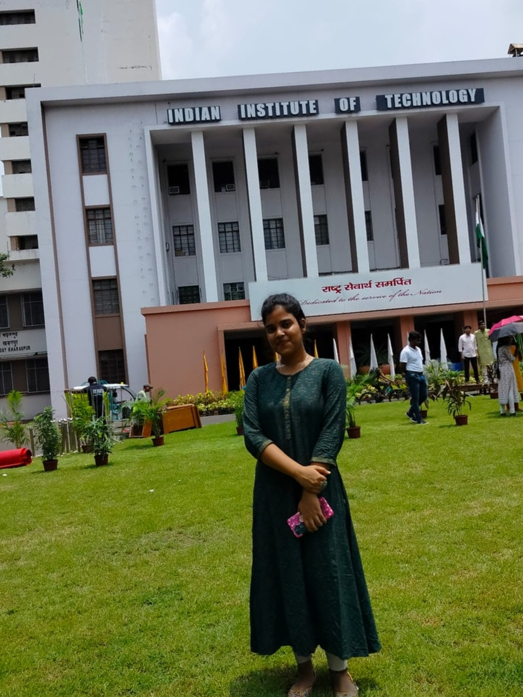

I completed my primary education from Vagdevi vilas Institutions, Banglore, karnataka.
Then, completed my high schooling from New Baldwin Institutions, Banglore.
Started my preperations for one of the toughest exams, JEE with a tie-up with Allen, Banglore.
Cracked the exam and enrolled in CSE branch of IIT Kharagpur.
Presently, I am in 2nd year, 4th semester.
